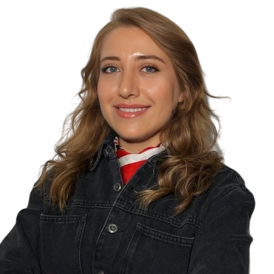

Fen Bilimleri Öğretmeni
Fizikten kimyaya, biyolojiden astronomiye — fen bilimlerini öğrencilerin gözünde korkulan bir ders olmaktan çıkarıp keşfedilecek bir maceraya dönüştürmeyi hedefliyorum. Deneye dayalı, meraklandıran ve düşündüren bir öğretim anlayışım var.

Hakkımda
Merhaba, ben Nurgül Yaşar. Fen bilimleri öğretmeni olarak, öğrencilerin çevrelerindeki dünyayı sorgulamasını, gözlemlemesini ve bilimsel yöntemle düşünmesini önemsiyorum. Derslerimi mümkün olduğunca deneye, gözleme ve uygulamaya dayandırarak, soyut kavramları elle tutulur hale getirmeye çalışıyorum.
Fizik, kimya, biyoloji ve astronomi konularını birbirinden bağımsız bilgiler olarak değil, günlük hayatla iç içe geçmiş bir bütün olarak anlatmayı hedefliyorum. Sınıf içi etkinliklerin yanı sıra bilim fuarları, STEM atölyeleri ve öğrenci proje danışmanlıkları ile öğrenmeyi sınıf duvarlarının dışına taşımaya gayret ediyorum.
Uzmanlık Alanları
Fen bilimlerinin her alt dalını, öğrencinin merakını canlı tutacak yöntemlerle buluşturuyorum.
Hareket, enerji ve kuvvet kavramlarını gündelik örneklerle ve basit deneylerle somutlaştırıyorum.
Güvenli laboratuvar deneyleriyle maddenin yapısını ve tepkimeleri görselleştiriyorum.
Canlıları, ekosistemleri ve insan vücudunu gözlem ve mikroskop çalışmalarıyla keşfediyoruz.
Gökyüzü gözlemleri ve güncel uzay çalışmalarıyla evrene dair merakı besliyorum.
Sınıf ortamına uygun, düşük maliyetli ve güvenli deney setleri tasarlıyor, uyguluyorum.
Fen derslerini basit kodlama ve tasarım-mühendislik etkinlikleriyle destekliyorum.
Deneyim & Eğitim
Akademik geçmişim ve mesleki gelişimimden kısa bir özet.
Fen bilimleri derslerini yürütüyor; bilim fuarı, proje danışmanlığı ve STEM atölyeleri düzenliyorum.
Fen bilgisi öğretmenliği alanında lisans eğitimimi tamamladım.
STEM eğitimi, deney tasarımı ve öğretim teknolojileri üzerine çeşitli eğitim ve sertifika programlarına katıldım.
İletişim
Bilim etkinlikleri, iş birlikleri veya sorularınız için benimle iletişime geçebilirsiniz.